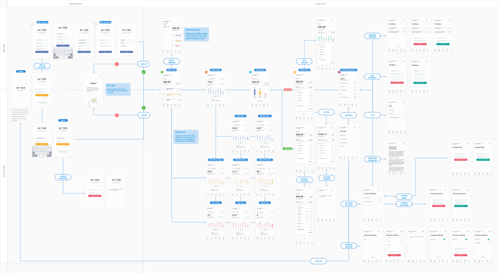
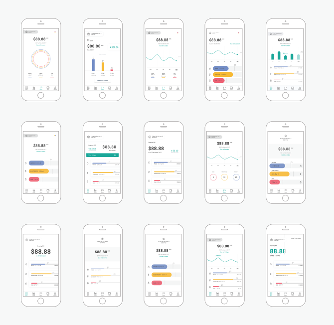

Meter
Meter is an app designed and prototyped for a call for proposal organised by the Singapore Energy Market Authority, Public Utilities Board and Singapore Powers in 2017. Over the duration of 4 weeks, my teammate and I ran quick research, design and testing sprints to develop our proposal.
The Challenge
To provide timely and useful information feedback to consumers on their utility consumption (electricity, town gas and water) via their smartphones.
Research
As we started off on this project, there were two key questions that came to our minds:
1. What information would consumers want to see and why?
2. What is the order of importance for each information type?
Realising this was not a question we could answer ourselves, we sat down with 30 people to ask them about their utility and conservation habits. These people range from first-time house owners, to singles who lived alone, to long-married couples, all who are staying in a wide variety of housing types.
After getting a better understanding of the different types of information required in the app, we wanted to know when could we best surface them. Based on the interviews, we considered the frequency of which one would need to view the individual pieces of information. From there, we sysnthesised our findings and identified 4 main content categories for the app: Main (Quick Overview), Usage (Detailed Breakdown), Goals and Bills.

Design
With the understanding that there are distinct content categories people are interested in regarding their utilities, we decided to proceed with a flat navigation.
From there, we started exploring layouts. One of the major design challenges was finding a way to represent data that was both comprehensible and accessible for all ages.
After filtering down to a few options, we quickly created clickable prototypes using invision. That allowed us to test with potential users and gather feedback to iterate our designs.
Presentation
At the end of the fourth week, we presented our work to a panel of judges and proceeded to win 1st runner up.